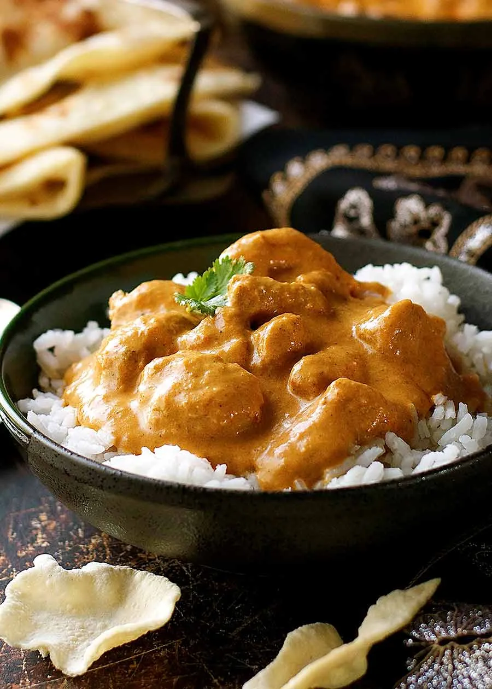

Butter Chicken Recipe
Home

Butter Chicken Recipe Description
Butter chicken is a simple curry dish from northern india yet
it remains one of the most popular curry's in the world. Most
importantly it is simple to make and easy gather all the ingredients.
Ingredients
- 1 cup butter, divided
- 1 onion, minced
- 1 tablespoon minced garlic
- 1 (15 ounce) can tomato sauce
- 3 cups heavy cream
- 2 teaspoons salt
- 1 teaspoon cayenne pepper
- 1 teaspoon garam masala
- 1 ½ pounds skinless, boneless chicken breast, cut into bite-sized chunks
- 2 tablespoons vegetable oil
- 2 tablespoons tandoori masala
Instructions
- First, mix your yogurt marinade.
- Marinate chicken for 20 minutes, or overnight if time allows. The longer it marinates, the more tender your chicken will be.
- Sear chicken in a skillet or pan. Keep those charred bits on the pan to make your sauce. Browned bits = flavour. If you have too many burnt pieces stuck to the pan, you can discard some of them if you wish.
- Finally, make your curry sauce in the same skillet.